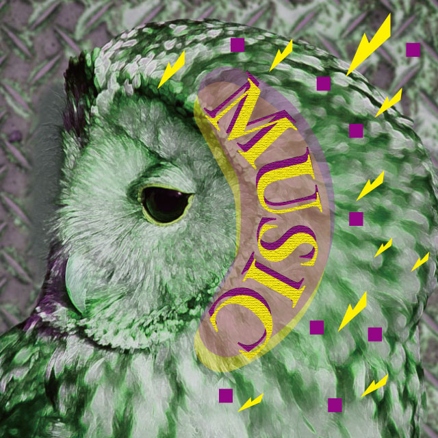
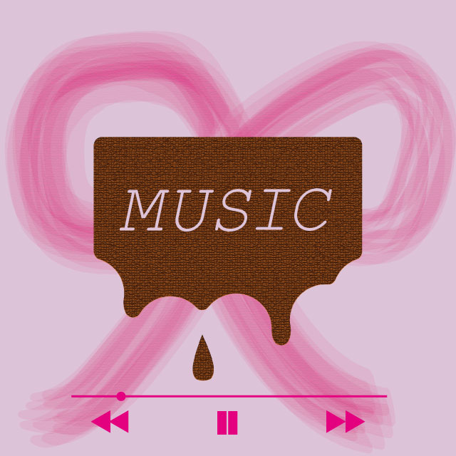

consept
jaket1- カテゴリ：cool、simple
かっこいいロックミュージックを集めたプレイリストをイメージしました。 - 
jaket2 - カテゴリ：cool、decorative
j-popの明るい曲をイメージしたジャケットです。
jaket3- カテゴリ：cool、decorative
インディーズのロックミュージックジャケットをイメージしました。 - 
jaket4 - カテゴリ：cute、simple
かわいい要素の多いジャケットをイメージして制作しました。
バレンタイン付近に配信されるラブミュージックプレイリストのイメージです。
jaket5- カテゴリ：cute、decorative
若い年齢の方が聞く音楽をイメージして、かわいいpopなジャケットを制作しました。
夏の音楽を集めたプレイリストのイメージです。